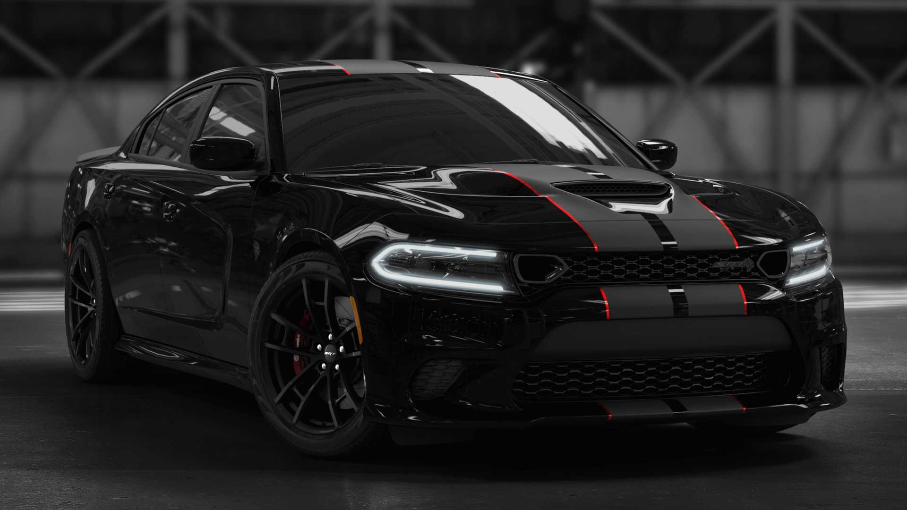

Dodge Charger SRT Hellcat
O Dodge Charger SRT Hellcat é um dos sedãs mais potentes do mundo, combinando um design agressivo com um motor supercharged V8 de alto desempenho. Perfeito para quem busca potência brutal com conforto de um sedã grande.
R$ 850.000
Adquirir Agora
Dodge Charger SRT Hellcat - Especificações Técnicas
Motorização e Desempenho
- Motor: 6.2L V8 HEMI Supercharged
- Potência: 717 cv (normal) até 807 cv (Redeye)
- Torque: 881 Nm
- Velocidade máxima: 327 km/h
- Aceleração 0-100 km/h: 3,6 s
Transmissão e Tração
- Câmbio: Automático de 8 marchas TorqueFlite
- Tração: Traseira (RWD)
- Diferencial de deslizamento limitado
Chassi e Suspensão
- Estrutura: Carroceria reforçada em aço
- Suspensão: Bilstein ativa, ajustável (modo Street, Sport, Track)
- Peso: ~2.100 kg
Freios e Rodas
- Freios: Brembo de 6 pistões
- Discos: 390 mm na dianteira
- Pneus: Pirelli P-Zero
- Rodas: 20" em alumínio forjado
Eletrônica e Modos
- Modos de condução: Eco, Sport, Track, Valet
- Controle de largada (Launch Control)
- Uconnect com tela de 8.4” e telemetria SRT
Dimensões
- Comprimento: 5.101 mm
- Largura: 1.905 mm
- Altura: 1.466 mm
- Entre-eixos: 3.048 mm
- Tanque: 70 litros
- Porta-malas: 467 litros